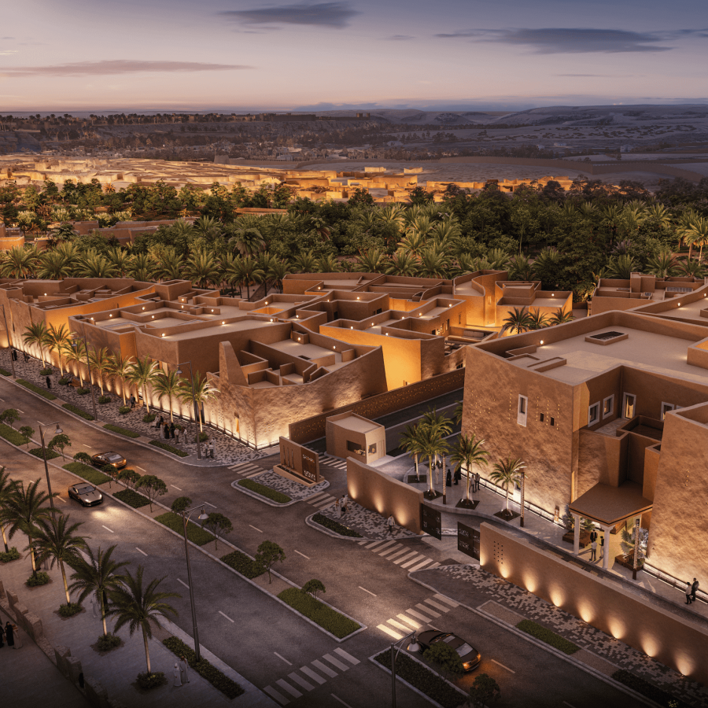

Diriyah Gate Development Authority (DGDA)

About Diriyah Gate Development Authority:
The Diriyah Gate Development project focuses on the revitalization and sustainable development of the historic Diriyah area, integrating heritage preservation, cultural development, hospitality, residential communities, retail, and public realm enhancements. The initiative aims to transform Diriyah into a world-class cultural and lifestyle destination while preserving its historic identity, traditional Najdi architecture, archaeological heritage, and natural landscape.
Project Details
- Location: Diriyah, Saudi Arabia
- Work Duration: Nov 2025 - Ongoing
- LOD: 200 and 300
- Role: Assistant Modeler Planning (Water)
- Worked Firm: AECOM EC India, Bangalore
- Tools Used: Civil3D, AutoCAD, Navisworks, BIM360 and Revizto
Key Contributions
- Contributed to the BIM modeling and development of utility networkS for Irrigation AND stormwater networks in TO22 and TO23 pacakeges, including pipe and pressure systems using Civil 3D.
- Generated detailed overall layouts, index drawings, cut sheets and standard drawings for secondary and terriary networks including bubbler and drip networks.
- Created a well structured 3D model with BIM standards.
- Performed clash detection and resolution using Revizto between cordination with other disciplines.
- Collaborated closely with engineers and multidisciplinary teams to ensure accurate outputs, timely submissions and successful project deliverable.
Challenges and Solutions
Adapting to the project requirements from concept design to detailed design, about irrigation networks, saudi arabia standards and cordination with multistake holder, other team members for clash solving are we facing as challenges.
Outcomes
We produced a clash-free model that met the client’s standards and requirements. We also provided all required layouts in printed and CAD formats. Through this project, I learned about Middle Eastern standards, project deliverables, and the overall project delivery process.
Back to Portfolio